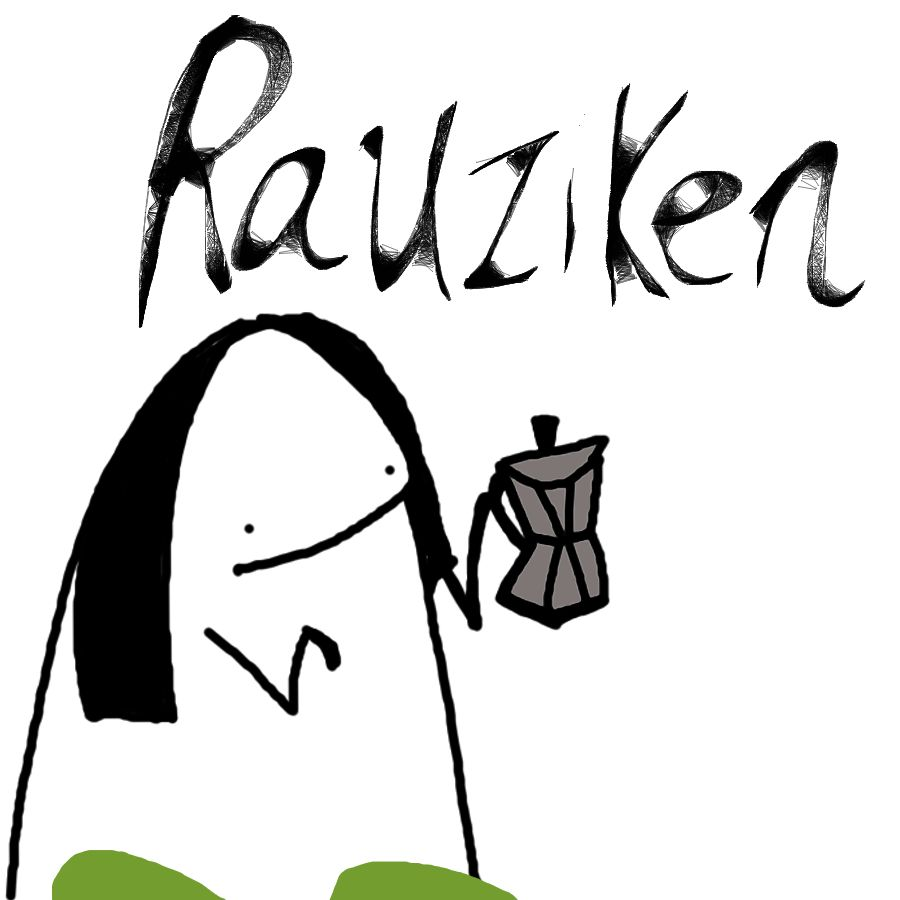

Casa Carracci (Millennium Bug)
Questa sezione è dedicata alle persone che vivono in Casa Carracci, a precindere dal fatto che ne paghino o meno l'affitto.
Esci da casa Carracci :(Luca (KJ)
Grazie Luca per un sacco di cose tra il non avermi denunciato alle autorità quando ti ho ingiustamente accusato di aver rubato il cerchietto di Federica Marchegiani alle elementari ed avermi prestato la pennetta USB per salvare i dati della tesi di laurea magistrale. Grazie per la birra tra mezzanotte e l’una della notte prima della consegna, e anche per il miliardo di altri spritz e birre che ci siamo fatti nell’ultimo anno (che realisticamente avranno accorciato le nostre aspettative di vita di almeno dieci anni). Grazie anche per aver tenuto allenate le mie abilità dialettiche ed avermi convinta che nella vita esistano delle verità insindacabili da difendere a tutti i costi, come ad esempio il fatto che i Saikebon non siano commestibili. Soprattutto, grazie per avermi ascoltata tutte le volte che te l’ho chiesto ed avermi dato torto tutte le volte che hai potuto. Sei l’unica persona che lo faccia con una simile coerenza, e a noi ragazzi speciali le certezze matematiche piacciono
ChiaRauzi
Grazie Chiarauzi per aver portato litri di buon caffè nella mia vita e non aver mai deluso il mio bisogno di caffeina, nemmeno dopo le 23.00. Grazie per avere accolto - nonostante le barriere linguistiche - me e il mio compagno di viaggio nella tua splendida famiglia, averci fatto scoprire le meraviglie del San Biagio e vedere delle mucche vere (vive). Grazie per il pacchetto di stickers che ha maggiormente segnato la mia vita adulta e che mi ha conseguentemente permesso di smettere di esprimermi verbalmente. Grazie per l’affetto dimostrato in mille modi diversi, la comprensione, la razionalità, i canederli senza carne sempre cucinati a parte, e soprattutto per avermi introdotto al concetto di Power Nap, che ho felicemente fatto mio.
Slenda
Grazie alla mia MedSchool girl preferita per aver passivamente accettato il soprannome Glelly, così come il mio spazzolino in bagno e il Britney Fan Club in cucina fino alle 5 di mattina il giorno della mia festa di compleanno, senza nemmeno ritirarsi in camera (almeno finché ha potuto). Grazie per aver selezionato tra la pletora di aspiranti coinquilini proprio quello che suonava il basso (proprio quello a quattro corde: hai controllato) ed aver accolto con matura rassegnazione anche tutto il suo entourage (perché tanto che fai? te ne privi? E no che non te ne privi).
Nostramazzius

Grazie Mazzio per avermi concesso di utilizzare canva anziché le slides della Pimpa per la presentazione di etica esprimendo la tua esplicita disapprovazione non più frequentemente di una volta ogni venti minuti per tutto il periodo della preparazione. Grazie per aver riempito la mia vita di spade e coccodrilli gialli ed aver partecipato a tutte le spedizioni punitive contro chiunque ci abbia vagamente accordato l’autoinvito. Grazie per avermi insegnato a debuggare il codice che scrivo e distruggo periodicamente con sofisticati sistemi di leve e ponti, e grazie per aver mantenuto uno scetticismo maggiore verso le mie capacità culinarie che verso le mie skills di programmazione: per la mia autostima è stato fondamentale. Grazie per avermi insegnato a distinguere visivamente la carne dal pesce senza il supporto di intelligenze artificiali, ma anche per essere stato il mio punto di riferimento cinico e razionale nei momenti di panico. Oggi in particolare, grazie per aver preso un giorno di ferie dalla tua stipendiata vita da persona adulta, seppur - citando la tua presidente di commissione delle medie - per “dovere, in questo caso piacere”.
Bezzio
Grazie carissimo per aver accettato di essere il quinto uomo della missione Pantelleria ed aver portato del sano senso pratico nelle nostre vite. Anche se hai contribuito a tenere allenata la mia apprensione ogni volta che ti sei arrampicato su uno scoglio, resti il mio eroe indiscusso delle Pandino Tales (nonché l’unico uomo agli occhi del babbo di Amanda). Grazie dottore per i grappini magici e per essere il mio fedele alleato nella difesa della musica da vecchi, così come nella lotta costante contro la dittatura di Masterchef il giovedì sera.
Fava Ghianda
Grazie fava per aver portato portato un sacco di c aspirate nelle nostre serate, per avermi bullizzata in quanto vegetariana ma comunque meno di quanto avresti potuto, e soprattutto per aver elevato Mazzio all’ennesima potenza. Grazie per aver allenato il mio udito a decibel che non avrei mai sognato di supportare, ma soprattutto grazie per avermi spiegato che un muro è un muro, il bianco è il bianco, e un piccione è un piccione.
Sparkling Bene
Grazie Petrus per aver portato un sacco di glitter nella mia vita ed aver alimentato il mio amore per il gossip e le paste a colazione. Grazie per le chiacchiere, le gite in montagnola e le foto che solo tu mi fai e che a 25 anni mi permettono ancora di mantenere l’illusione di una parvenza di decoro estetico su instagram (in controluce). Grazie per l’approccio leggero e positivo che cerchi di trasmettere, ma soprattutto grazie per aver sdoganato con me la seconda colazione della mattina.
Gu
Grazie Gu per non esserti mai tirato indietro davanti ad un aperitivo, ad un comitato organizzativo per una laurea, ad una serata o all’ultimo giro di qualcosa. Grazie anche per aver introdotto i synthy e i remix di De André nelle serate di casa Carracci. Ma più di tutto questo, ti ringrazio per avermi posto davanti a dilemmi etici che mi accompagneranno per il resto della mia ormai traumatica e traumatizzata età adulta.
Cassandra Crossing
Grazie Giuli per essere stata la mia nonna spirituale a Bologna, per avermi sempre dato consigli lucidi e pasti non liofilizzati. Resti la mia fonte indiscussa di meme sulla disperazione esistenziale, l’inviata speciale dalla Francia per i nostri fitti scambi di reels sui gattini, ma soprattutto l’unico fidato infopoint delle giornate in cui fallisco nel seguire gli Wiki How su come si affronta la crisi di quarto di secolo.
FrencyG

Grazie alla mia FrencyG per aver arricchito questi anni della sua travolgente leggerezza. Grazie per tutte le occasioni in cui hai saputo sdrammatizzare senza banalizzare, le volte in cui mi hai detto “Grandeee” facendo sembrare una cosa speciale una stupidaggine che ho imparato a fare con un computer in mano che tu eri già in grado di fare da anni, e anche per non aver mai dato niente per scontato. Come la volta in cui per farmi perdonare di averti fatto saltare cena per consegnare un progetto ti ho preparato la guacamole all’una di notte e hai continuato a ringraziarmi per giorni. Grazie per avermi fatta ridere da morire con le imitazioni o coi racconti dei tuoi trascorsi da giovane ribelle, ma anche per i discorsi seri e i momenti in cui di punto in bianco dimostri di essere quella che ha davvero la testa sulle spalle e la situazione sotto controllo.